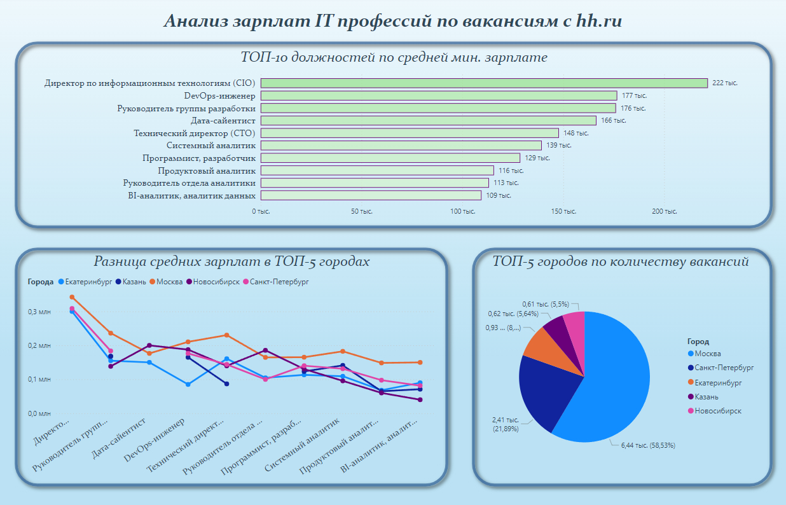
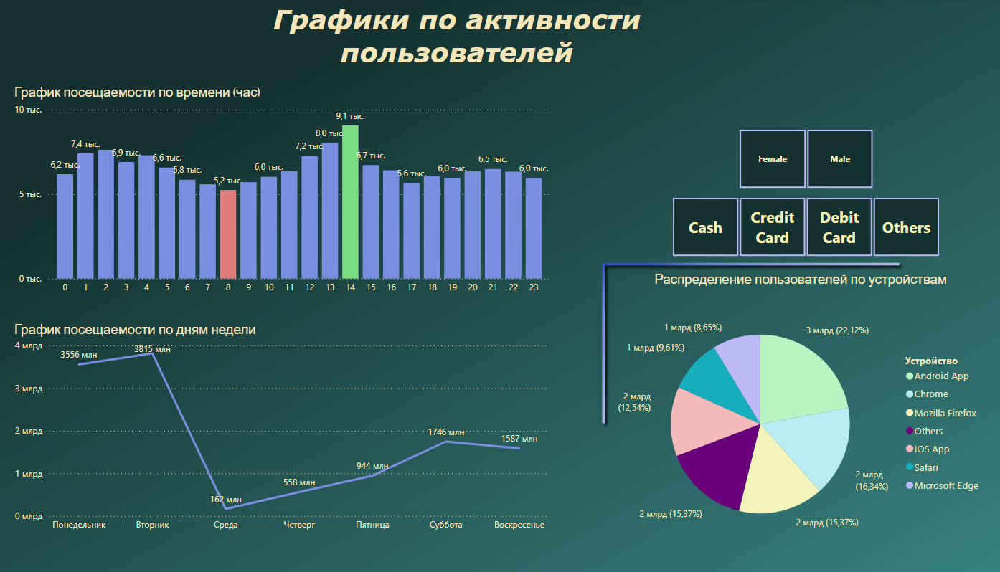

Графики и визуализация данных
Проект 1: Анализ продаж кофейни

Динамика продаж за год.
Проект 2: Анализ зарплат в IT-профессиях
Средние зарплаты исходя из вакансий на сайте hh.ru
Проект 3: Анализ навыков в IT-профессиях
Рейтинг самых востребованных навыков
Проект 4: Анализ активности покупателей на маркетплейсе
Анализ активности по часам и по дням недели
SQL запросы
employees Table
| id | name | department | salary | hire Date |
|---|---|---|---|---|
| 1 | Alice | IT | 60000 | 2019-05-20 |
| 2 | Bob | HR | 50000 | 2020-08-15 |
| 3 | Charlie | IT | 75000 | 2018-10-10 |
| 4 | David | Sales | 55000 | 2021-01-05 |
| 5 | Eve | IT | 70000 | 2017-12-11 |
departments Table
| department | budget |
|---|---|
| IT | 250000 |
| HR | 100000 |
| Sales | 150000 |
Пример 1: Сотрудники с зарплатой выше среднего по их отделу
SELECT name, department, salary
WHERE salary > (
SELECT AVG(salary)
FROM employees
WHERE department = e.department
);
Для каждого сотрудника сравнивается его зарплата со средней зарплатой по его отделу.
Подзапрос вычисляет среднюю зарплату для текущего отдела (e.department).
Пример 2: Топ-2 самых высокооплачиваемых сотрудников в каждом отделе
SELECT name, department, salary
FROM employees e1
WHERE salary >= (
SELECT MIN(salary)
FROM (
SELECT salary
FROM employees e2
WHERE e2.department = e1.department
ORDER BY salary DESC
LIMIT 2
) top_salaries
);
Внутренний подзапрос выбирает две самые высокие зарплаты в отделе.
Внешний запрос возвращает сотрудников с зарплатой, входящей в эти значения.
Пример 3: Сумма зарплат по отделу
SELECT name, department, salary,
SUM(salary) OVER (PARTITION BY department) AS total_department_salary
FROM employees;
Функция SUM() с оконной функцией вычисляет общую сумму зарплат по каждому отделу (PARTITION BY department).
Пример 4: Рейтинг сотрудников по зарплате в отделе
SELECT name, department, salary,
RANK() OVER (PARTITION BY department ORDER BY salary DESC) AS rank_in_department
FROM employees;
RANK() вычисляет позицию сотрудника в отделе по убыванию зарплаты.
Если у сотрудников одинаковая зарплата, им присваивается одинаковый ранг.
Пример 5: Средняя зарплата старше 2 лет в компании
WITH long_term_employees AS (
SELECT id, name, salary, department
FROM employees
WHERE hire_date < CURRENT_DATE - INTERVAL '2 years'
)
SELECT name, department, salary,
AVG(salary) OVER (PARTITION BY department) AS avg_salary_in_department
FROM long_term_employees;
Временная таблица (long_term_employees) отбирает сотрудников, работающих более двух лет.
Затем оконная функция вычисляет среднюю зарплату для каждого отдела среди этих сотрудников.